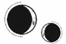

CAPÍTULO 65
Augustus 1787
Incluso antes de la guerra, Helena había estado muy pocas veces en la isla Oeste, pero sabía que tenía que dirigirse al sur y descender a los niveles inferiores para llegar a su modesto puerto.
La ciudad estaba oscura y tan en silencio que en la plaza apenas parecía que tuviera lugar una guerra. Utilizar los ascensores, si es que funcionaban siquiera, quedaba descartado, pues tendría que pagar una tarifa e identificarse, pero siempre podía recurrir tanto a las escaleras principales como a las reservadas para el personal de servicios. Serían la ruta más rápida. Cuando se topaba con alguna puerta cerrada, por lo general los cerrojos eran lo bastante sencillos como para poder forzarlos con una rápida transmutación.
No se cruzó con nadie hasta llegar casi a los niveles más bajos. Justo cuando había conseguido abrir un portón, aparecieron dos personas en el último tramo de la escalera. Helena intentó esconderse, pegándose contra la pared para dejarlos pasar sin llamar la atención, pero al final decidió arriesgarse a levantar la vista y tuvo que ahogar una exclamación de sorpresa.
Era Crowther. El hombre la miró con apatía, sin demostrar emoción alguna, pero se detuvo en seco cuando la persona que lo acompañaba se giró y vio a Helena.
Ivy le ofreció una pequeña sonrisa.
—Tú también has conseguido escapar. Tenía la esperanza de que lo hubieras logrado.
Helena la miró horrorizada. Al volver a estudiar el rostro inexpresivo y de mirada vacía de Crowther, comprendió que estaba muerto.
—¿Qué has hecho? —preguntó con voz temblorosa.
La sonrisa de Ivy se desvaneció.
—El Nigromante tiene a Sofia. Me prometió que me la devolvería si lo ayudaba a capturar a Crowther y tomar el Cuartel General. Lo querían vivo, pero me dijeron que no importaba si moría, así que lo he matado.
Evidentemente, creían que Crowther era el cerebro que estaba detrás de la obsidiana. A Helena le daba vueltas la cabeza.
—¿Has sido tú quien les ha estado informando de todo? ¿Tú los dejaste entrar en el Cuartel General?
No había sido Cetus. Ella era la verdadera traidora.
—Tuve que hacerlo. Era la única forma que tenía de recuperar a mi hermana.
—Pero Sofia está muerta, Ivy.
—¡No! —exclamó ella sacudiendo la cabeza—. Está viva. La he visto y me reconoce cuando voy a visitarla. Me la devolverá cuando le entregue a Crowther.
—¿Cómo has podido hacernos esto? —Helena no fue capaz de decir nada más—. Todas esas personas…
—Iban a morir igual —replicó Ivy con un cruel movimiento de la cabeza—. Así ha sido más rápido. Me he asegurado de evitarles una muerte agónica. —Negó de nuevo—. Hubieran muerto igualmente.
Ivy se dio la vuelta y siguió adelante, con el cadáver de Crowther pisándole los talones.
El laboratorio del puerto Oeste estaba situado en un edificio enorme y sin ventanas que antaño había sido una nave industrial. A principios de año, Kaine le había conseguido a la Llama Eterna un plano del interior del laboratorio, pero nunca habían tenido la oportunidad de utilizarlo.
El sistema de ventilación del edificio se limitaba a unos pocos conductos estrechos, diseñados para proteger el lugar de posibles ataques pirománticos, por lo que el aire solía enrarecerse con facilidad. Y eso era justo lo que Helena necesitaba.
Al avanzar, examinó con desconfianza los edificios más pequeños que había repartidos por las inmediaciones del laboratorio. Mientras evaluaba la nave principal, un necrómata se acercó a investigar, atraído por su presencia, aunque una única persona desarmada no suponía una amenaza. Antes de que la alcanzara, Helena se tocó el cuello para despejarse la mente, extendió la mano y arrancó la energía que animaba al necrómata como si le estuviera quitando una pelusa de una chaqueta.
El cadáver se desplomó contra ella, envolviéndola en el hedor de la descomposición, pero Helena enseguida lo reanimó con su resonancia. No estaba en buenas condiciones: había empezado a hincharse y todos sus tejidos y ligamentos estaban deteriorados.
Se aseguró de usar la mínima energía necesaria.
En cuanto estuvo bajo su control, la criatura se volvió hacia el siguiente necrómata y lo inmovilizó para que Helena repitiera el proceso. En cuanto acabó, tenía más de veinte necrómatas reunidos a su alrededor. Los límites de su consciencia se difuminaron al dividir su atención entre las mentes embotadas de los necrómatas, pero consiguió mantener el control: su mente seguía siendo suya.
—Encontrad todos los accesos al edificio —les ordenó mientras activaba y distribuía las bombas.
El efecto del calmante se había incrementado cada vez que utilizaba la nigromancia. La concentración que exigía la tarea le resultaba agotadora, pero por suerte las instrucciones para los necrómatas eran prácticamente idénticas. Apretó los dientes y completó cada bomba con una transmutación antes de pasárselas a sus nuevos ayudantes para que se alejaran con ellas lo más deprisa posible.
Debía mantenerse en una posición lo bastante alejada como para no quedar dentro del radio de la explosión, pero lo suficientemente cerca como para que el fósforo no prendiera antes de tiempo tras haber sido activado, y eso requería un delicado equilibrio.
Los necrómatas comenzaron a trepar por las paredes en cuanto llegaron a la nave. Helena retrocedió. La vista se le emborronó mientras los seguía con la mirada, cada vez más alto. Por suerte, carecían de centros nerviosos para notar cómo se arrancaban la carne de los dedos al escalar.
Helena cerró los ojos con fuerza y trató de concentrarse en el avance de los necrómatas. Habían alcanzado los conductos de ventilación y las rejillas de la nave. Otros habían escalado hasta el techo y estaban desmontando las cubiertas de los respiraderos. El corazón le latía a toda velocidad cuando uno de los necrómatas, el que aún conservaba una vista algo nítida, sostuvo una de las esferas a la altura de un conducto y confirmó que cabía por la apertura.
A la vez, los necrómatas tiraron de los delicados pasadores que Shiseo había transmutado para ella y dejaron caer las bombas por los conductos de ventilación de la nave reforzada y aislada del exterior.
En cuanto las últimas bombas cayeron, Helena se dio la vuelta y echó a correr.
A sus espaldas se oyó un estallido sordo casi de inmediato cuando las primeras estallaron. Al echar la vista atrás, vio unas diminutas nubes de polvo. Algunas resplandecían, mientras que otras eran de color blanco.
Y entonces el mundo estalló a su alrededor.
El aire se desgarró ante la violencia de la explosión, que le revolvió el cabello a Helena y la persiguió como una ola de calor abrasador.
El fuego trataba de engullirlo todo; se devoraba a sí mismo, ardía desatado y voraz, succionando todo el oxígeno hasta crear un tornado. Helena acababa de cometer todos los pecados pirománticos sobre los que había advertido a Luc.
Las naves industriales no estaban diseñadas para la integridad estructural, sino para albergar la máxima cantidad de mercancía, por lo que los elementos estructurales eran escasos. Los planos de Kaine indicaban con precisión cada rincón. La nave se derrumbó y voló repentinamente por los aires con una segunda explosión. El fuego había encontrado, sin duda, las armas que Bennet desarrollaba o los peligrosos recursos inflamables que almacenaba allí para fabricar sus propias bombas.
El suelo se movió bajo sus pies como si fuera líquido y los adoquines se resquebrajaron.
Helena salió despedida y chocó con uno de los edificios contiguos.
El fuego seguía rugiendo cuando abrió los ojos. El calmante había amortiguado el golpe, pero permaneció tendida en el suelo mientras intentaba recuperar el aliento y un dolor punzante, probablemente insoportable, se le clavaba en el cráneo.
Todo ardía a su alrededor. Sintió cómo subía la temperatura y escuchó nuevas explosiones pese a que un pitido agudo y doloroso amortiguaba el resto de los sonidos. Donde antes se alzaba el laboratorio, solo quedaban escombros y llamas.
Cuando intentó ponerse de pie, las piernas le fallaron y se desplomó, jadeando con dificultad. Le ardían los pulmones, pero la cabeza le daba vueltas con cada bocanada de aire.
Debía de ser por el anulitio.
Se quitó la chaqueta que llevaba y se cubrió la boca y la nariz con ella para intentar respirar despacio.
«Ponte de pie, corre».
Pero estaba agotada y nada parecía real. Estaba atrapada en una pesadilla, una pesadilla interminable. Durante los años que duró el conflicto, se había repetido sin cesar que todo valdría la pena, que todas las mentiras tendrían su recompensa. Pero había matado a Luc, le había atravesado el corazón a la primera persona que debería haber salvado.
Se quedó allí tumbada, dejándose llevar por la pena. Inmovilizada bajo el peso del dolor. ¿Cómo iba a levantarse? ¿Cómo se enfrentaría a esas emociones?
Kaine.
Abrió los ojos de golpe y se arañó el cuello en un nuevo intento por contener los efectos de la medicación mientras el humo del incendio le anegaba los pulmones.
Le había dicho que esperaría.
Si no regresaba, Kaine se encontraría con el desorden de piezas que había dejado al ensamblar las bombas y la nota garabateada que rezaba «Te quiero. Te quiero. Te quiero».
Se obligó a incorporarse. No pensaba morir ni dejar a Kaine atrás. Tenía que volver.
Se las arregló para dar unos pocos pasos antes de derrumbarse otra vez. A través del humo, veía unas siluetas acercándose a ella, pero no conseguía que las piernas la sostuvieran, así que metió la mano en el bolsillo con torpeza y sacó el frasquito y la jeringuilla que se había guardado como último recurso.
Con las manos temblorosas, clavó la aguja en la tapa del frasquito, tiró del émbolo y llenó la jeringuilla. Luego, inspiró hondo para reunir valor y se inyectó el líquido directamente en el corazón. La mezcla de estimulantes había sido idea de Kaine. La descarga de energía fluyó como un torrente por sus venas, arrastrando consigo los restos del calmante y la transmutación que la mantenían adormecida. La energía que vibraba en su interior estaba despejando su mente, dándole nitidez y luminosidad.
Se puso de pie de un salto y corrió más rápido que nunca. Apenas sentía su propio cuerpo. Lo único que sabía era que necesitaba correr.
Algo la derribó. Helena se retorció para coger sus cuchillos, pero notó la caricia del pelaje de un animal, así que se agarró a su atacante y le lanzó una descarga de resonancia buscando los puntos de unión transmutacional que mantenían unidas las distintas partes de la criatura para desconectarlos.
La quimera murió al instante.
Helena se incorporó con torpeza, blandiendo un arma de obsidiana, cuando los necrómatas empezaron a rodearla. Se abrió camino entre ellos a cuchilladas, sin apenas prestarle atención a sus intentos por agarrarla. Se negaba a perder de vista las torres altas de la ciudad. Era allí hacia donde se dirigía. Iba a volver y estaría esperando a Kaine cuando este regresara.
No pensaba morir.
Pero no tuvo tiempo de reanimar a los necrómatas para que la defendieran, así que destruyó todo a su paso con una eficiencia implacable. El poder que fluía por sus venas era tan intenso que su corazón amenazó con partirse en dos si dejaba de moverse. Echó a correr en cuanto se zafó de ellos con la sangre retumbándole en los oídos. Al ver que más siluetas comenzaban a surgir de entre las nubes de humo, Helena se detuvo en seco, horrorizada.
Entre ellas, estaba Althorne.
No tenía ni idea de cómo se las habían arreglado para reanimarlo después de haberlo contaminado con el anulitio. Debían de haber hecho un gran esfuerzo para hacerse con el cuerpo del general. Junto a él, caminaba un hombre joven, de cabello color trigo y rostro cuadrado.
Era Lancaster.
Crowther había comentado que los prisioneros habían muerto en el bombardeo, pero era evidente que se había equivocado. Helena miró a su alrededor, temerosa por descubrir a quién más se encontraría.
—Vaya, vaya, tenías razón —le dijo Lancaster a Althorne—. Sí que había alguien fuera.
—Cogedla —graznó el liche que manejaba el cuerpo de Althorne y la miraba con los ojos entornados a través del humo—. Puede que ella sepa quién ha atacado el laboratorio.
—¿Me la puedo quedar si consigo atraparla? —preguntó Lancaster, que estudiaba a Helena de nuevo con un brillo extraño en la mirada, como si la reconociera.
—Cuando hayan terminado de interrogarla, será toda tuya. Ahora, date prisa.
Al ver que Lancaster avanzaba hacia ella, Helena sustituyó el cuchillo de obsidiana por la daga larga de titanio. Si el liche prefería quedarse atrás y enviarlo a él, debía de ser aún un mero aspirante.
Aunque eso también significaba que el liche era quien controlaba a los necrómatas. Tendría que librarse de él si no quería que acabaran persiguiéndola por toda la ciudad. Pero primero se ocuparía de Lancaster.
Su mayor ventaja era que la querían viva.
—Déjame pasar —le dijo cuando el hombre estuvo casi a su altura.
La silueta del liche empezó a desdibujarse entre el humo, pero Helena trató de no perderlo de vista, de controlar sus movimientos.
Lancaster negó con la cabeza.
—Venga, no te compliques las cosas. Te superamos en número, así que suelta el cuchillo.
Los necrómatas la habían rodeado, todos con armas de largo alcance. Helena miró a izquierda y derecha buscando una ruta de escape mientras evaluaba sus opciones. La sangre le retumbaba en los oídos y la instaba a moverse, a atacar, a correr. Tenía que mantener la mente fría.
Sostuvo la daga durante un instante, notando la textura de la empuñadura y de los delicados detalles que la decoraban, antes de tragar saliva y dejar que se le escurriera de entre los dedos y cayera al suelo con un estrépito. Bajó la cabeza y avanzó en actitud sumisa mientras dejaba caer también la mano para alcanzar otro de sus cuchillos.
—Cogedla —ordenó Lancaster cuando vio que la chica se movía con paso vacilante hacia él.
Los necrómatas obedecieron y bajaron las armas, y, cuando uno de ellos se dispuso a agarrarla del brazo, Helena atacó.
Transmutó la daga en mitad del movimiento y la hizo el doble de larga con un centelleo. Le cortó la mano a la criatura, le atravesó el vientre y le enterró una hoja más corta en el cráneo a otro necrómata.
Luego, esquivó una espada sibilante que dibujó un arco sobre su cabeza y se la clavó al necrómata que se encontraba detrás de ella. Al oírlo gritar, dedujo que no todos sus atacantes eran necrómatas. Serían entonces más fáciles de matar. Aunque, en realidad no intentaba ganar; no estaba librando ninguna batalla. Lo único que quería era escapar. Se mantuvo orientada hacia la dirección en que había desaparecido el liche.
«No vas a morir aquí».
Alguien la agarró con fuerza de la muñeca izquierda y ella se retorció para liberarse, pero un dolor cegador le envolvió el hombro al dislocárselo. Giró sobre los talones y le puso una mano encima a su atacante sin pensárselo dos veces para que la resonancia arrasara con todo lo que tocara. Oyó un grito agónico y, en cuanto su muñeca quedó libre, se arrastró lejos de la persona que la había agarrado mientras intentaba recolocarse el hombro. Apenas podía mover los dedos, pero se negó a detenerse.
«Actúa rápido y con cabeza», le había dicho Kaine. Eso era lo que tenía que hacer para sobrevivir.
Lancaster se interpuso en su camino con una sonrisa triunfal, seguro de su victoria, pero Helena le clavó la daga en el pecho sin dudar y él cayó fulminado.
En cuanto se recompuso, corrió directa hacia el humo y de nuevo pudo ver la ciudad que se extendía al otro lado, resplandeciente y llena de falsas promesas. Los necrómatas todavía le pisaban los talones; los oía pese a no poder verlos. Había llevado su cuerpo tan al límite que su campo de visión empezaba a desdibujarse. La combinación de estimulantes y calmantes estaba haciendo un excelente trabajo enmascarando la verdadera gravedad de sus heridas.
Vislumbró una amplia silueta entre el humo: era Althorne. Cogió la daga de obsidiana y se lamentó por no poder utilizar el brazo izquierdo, pero amplificó su resonancia hasta que vibró a su alrededor como un campo de energía mientras se lanzaba hacia él.
De repente, algo grande y pesado se abalanzó sobre ella. Helena consiguió esquivarlo en el último segundo y su atacante cayó de bruces al suelo.
El liche blandía una guja, igual que Lila, pero con movimientos mucho menos ágiles y elegantes. Helena nunca se había enfrentado a un liche, pero aquel en concreto no parecía estar acostumbrado a manejar su cuerpo. Si conseguía herir a Althorne con la obsidiana, aunque fuera una sola vez, interrumpiría la reanimación. De hecho, si se las arreglaba para clavársela lo bastante cerca del talismán, incluso podría matar al inmarcesible que estuviera moviendo sus hilos.
—Pareces una alquimista de primera —dijo la voz del general. La guja pasó tan cerca de Helena que su estela estuvo a punto de cortarle la mejilla—. ¿Qué eres?
Ella estaba demasiado alterada como para contestar. Toda su atención se centraba en esquivar los movimientos del liche. Por fin pudo ver a Althorne con claridad: tenía el rostro gris y una herida supurante en la cabeza, y aún llevaba puesta la armadura, lo cual suponía un problema para atacarlo.
Al acercarse demasiado a Althorne, este le asestó un revés. Por suerte, consiguió abrirle la piel grisácea de la muñeca con la obsidiana. Helena se dio un golpe tan fuerte contra el suelo que se quedó sin aliento, pero se obligó a levantar la cabeza con un jadeo al ver que el poder de la reanimación escapaba del cadáver de Althorne como si una infección se le extendiera por su brazo.
Se incorporó con torpeza. Aunque los necrómatas todavía la perseguían, ahora se movían más despacio. El liche no se defendió cuando Helena se aproximó a él.
Solo manejaba bien una de sus manos y apenas podía sostener el arma de obsidiana con la izquierda mientras le quitaba la armadura a Althorne con la derecha. Al darse cuenta de lo que estaba haciendo, intentó agarrarla, pero Helena lo sujetó por el cuello, lo agarró con fuerza y le arrancó el esófago de un solo tirón. Althorne cayó como un peso muerto. Helena se tambaleó, apartó la armadura e intentó localizar el talismán de su pecho para saber dónde clavar la obsidiana. Una sangre oscura y putrefacta fluyó del agujero de su garganta y le empapó la ropa, la armadura y la cadena de plata que pendía de su cuello. El colgante manchado de sangre había estado a punto de caer dentro de la herida abierta.
Era un dragón con las alas arqueadas y la cola entre los dientes.
Helena se lo quedó mirando: el liche era Atreus Ferron.
Intentó afianzar su agarre sobre la daga, pero tenía el brazo izquierdo entumecido. ¿Qué era mejor? ¿Matarlo directamente o entregarle el talismán a Kaine para dejar el destino de su padre en sus manos?
No. Tenía que hacerlo ella. Kaine no debería cargar con la responsabilidad de matar a su propio padre. Volvió a explorarlo con la resonancia intentando localizar el talismán.
¡Paf!
Algo le golpeó en la cabeza. Todo se volvió rojo. Cayó sobre el cadáver de Althorne y, al intentar levantarse, el mundo empezó a dar vueltas a su alrededor. Consiguió incorporarse unos segundos antes de desplomarse de nuevo.
Lancaster trastabilló hacia ella, con el torso empapado de sangre y la guja en la mano. Había utilizado un asta para atacarla por detrás.
—Ya puedes darte por muerto —le dijo Helena mientras hacía todo lo posible por ponerse de pie.
—Eso ya lo veremos —respondió él con una carcajada jadeante. La señaló con un gesto de la mano—. Levantadla.
Dos aspirantes tiraron de Helena hacia arriba y le arrebataron el cuchillo de obsidiana de una patada. Las piernas apenas la sostenían. Todo se tambaleaba a su alrededor, pero los medicamentos seguían rugiendo en sus venas y su resonancia vibraba a la máxima potencia. Sin embargo, en vez de enfrentarse a ellos, Helena se apoyó en el aspirante más armado para robarle el primer cuchillo que pudiera sacar con facilidad de la funda.
Eran unos idiotas por caer dos veces en la misma trampa.
Encontró uno mientras la llevaban hacia su líder. Se trataba de un arma de combate reglamentaria, un modelo que conocía muy bien. Lancaster estaba pálido por la hemorragia que sufría, pero no perdió la sonrisa y mantuvo las distancias con ella. Era evidente que prefería arriesgar la vida de sus compañeros que la suya propia.
—Me lo voy a pasar en grande contigo. En cuanto sea uno de los inmarcesibles, me aseguraré de que te despellejen viva.
Helena reunió la poca fuerza que le quedaba y lanzó un último ataque.
Lo habría apuñalado justo en el corazón de no haber sido porque él logró esquivarla en el último segundo. Por desgracia para él, la resonancia de Helena era más amplia que la de la mayoría: atravesó la armadura como si fuera de papel y transmutó el arma con un giro de muñeca para destrozarle los pulmones. Luego, cerró los dedos con fuerza en torno a su cuello.
Lancaster la agarró del pelo y se zafó de Helena antes de que ella tuviera oportunidad de volarle los sesos con su poder. Helena se defendió arañando y clavando las uñas a cualquiera que se le acercara.
—Rompedle la mano. ¡Rompedle la puta mano! —gritaba Lancaster mientras trataba de quitarse el cuchillo que tenía clavado en el pecho sin éxito, pues era consciente de que podría arrancarse los pulmones de cuajo al hacerlo.
Alguien la agarró del antebrazo y le pisó la muñeca derecha con un desagradable crujido. Helena vio, impotente, cómo le destrozaban los huesos contra el suelo empedrado.
Cuando la soltaron, se quedó tumbada en medio de la calle. Lancaster ya se había desplomado. Al cabo de unos segundos, Helena trató de incorporarse apoyándose en el brazo dislocado.
«Corre. Tienes que salir corriendo».
A uno de los aspirantes solo le quedaba una mano, pero desenvainó su espada y le asestó un golpe en la cabeza con la empuñadura.
Helena despertó oyendo gritos.
Estaba tumbada en una superficie fría y dura, y, cuando intentó abrir los ojos, descubrió que los tenía pegados por la suciedad. Al intentar frotárselos, un dolor punzante se extendió ardiendo por su cerebro. Hizo un esfuerzo por abrir los ojos de nuevo, pero sus párpados se resistían a separarse.
—Tranquila. Con cuidado. Tienes sangre seca en las pestañas —le dijo una voz que le resultaba familiar mientras unos dedos suaves le frotaban los párpados—. Prueba ahora.
Helena entreabrió los ojos y, a través de la neblina que enturbiaba su vista, vio a la enfermera Pace mirándola desde arriba. Estaba tumbada con la cabeza apoyada en el regazo de la mujer y se encontraban en un lugar oscuro, iluminado solo por una linterna.
Volvió en sí poco a poco. Aunque el dolor era inmenso, sabía que lo peor estaba aún por llegar. El aire olía a sangre, tanto seca como fresca.
Se oían gritos constantemente.
Y risas también.
Helena trató de incorporarse, pero Pace se lo impidió.
—Ni hablar. Estás muy malherida. He podido colocarte el hombro, pero se han llevado tu corsé ortopédico y tienes la muñeca destrozada.
—¿Dónde estamos? —logró preguntar.
No conseguía enfocar la mirada, pero reconoció a una de las sanadoras, así como a varias médicas y camilleras. Todas estaban agrupadas a su alrededor.
—En el Cuartel General —respondió Pace con una sonrisa tensa—. En el patio.
Helena miró más allá de la enfermera y alzó la vista: había algo sobre sus cabezas. Estaban encerradas en una jaula grande, de las que se usaban para los animales. Había decenas de jaulas repartidas por toda la estancia.
—Déjame levantarme —le pidió incorporándose con esfuerzo.
Su cuerpo empezó a protestar a medida que los efectos de los estimulantes y el calmante iban mitigándose. Sin el corsé, la presión se acumuló en su esternón al intentar mirar más allá de los barrotes de su jaula. Necesitaba saber de dónde venían los gritos.
Era Rhea. La habían colgado de las muñecas. Titus estaba a su lado, cubierto de sangre y con todo tipo de cuchillos, palos y lanzas clavados por el cuerpo. Se sacó uno de los cuchillos de la pierna y empezó a despellejar a su mujer con él.
Luego, se llevó el pedazo de piel a los labios y se lo comió.
Estaba muerto. No podía ser de otra forma, pero eso no hacía que la imagen fuera menos aterradora.
Además, Rhea no estaba muerta.
Junto a ella, había pedazos de carne colgando de distintas cadenas. Helena entornó los ojos en la penumbra para tratar de distinguir mejor qué era lo que estaba viendo.
Brazos amputados.
Un torso.
La cabeza de Alister.
Se le revolvió el estómago y rodó hacia un lado para vomitar con tanta violencia que una descarga de dolor le desgarró la espalda mientras su cuerpo se convulsionaba. Levantó la vista cuando Pace le limpió la boca con un pedazo de tela.
Helena se volvió.
—¿Cuánto tiempo llevan…?
—Todo empezó al atardecer —explicó Pace con voz temblorosa—. En cuanto confirmaron que tenían el control del Cuartel General. Por suerte, no han conseguido atrapar a Luc y a Sebastian, así que todavía hay esperanza.
A Helena se le formó un nudo tan grande en la garganta que por un instante pensó que se asfixiaría. No se veía con fuerzas de decirle a la enfermera que Luc no iba a salvarlas, que ya no podía hacer nada.
Bajó la vista. Le habían quitado toda la ropa y le habían puesto una bata gris. Incluso se habían llevado las horquillas y las gomas con las que se sujetaba su cabello, además del brazalete con el que la llamaban cuando la necesitaban en el hospital. Lo único que le quedaba era el anillo de Kaine, que se desdibujaba ante sus ojos incluso cuando lo miraba directamente. Había funcionado; ni siquiera habían conseguido encontrarlo al revisarla mediante la resonancia.
En la muñeca izquierda llevaba ahora un grillete de supresión como los de Lila. Por lo hinchada que tenía la mano derecha, imaginaba que no habían podido colocarle el grillete que completaba el juego.
Los gritos de Rhea se fueron apagando.
Al oír un rugido de emoción, Helena levantó la vista, aterrorizada ante la posibilidad de descubrir qué ocurriría a continuación.
Un coche largo y bajo cruzó la verja de entrada y a Helena le dio un vuelco el corazón al verlo detenerse ante los escalones que conducían a la Torre. La puerta del vehículo se abrió y Luc salió de su interior con una expresión vacilante, casi avergonzada, como si llegara tarde a una fiesta.
Un susurro recorrió el patio. Todos los prisioneros lo miraron, conmocionados, mientras Luc observaba la escena que se estaba desarrollando ante él.
—No… —dijeron Helena y Pace al unísono.
Luc se volvió e hizo una reverencia profunda y sumisa ante la persona que salió del coche tras él. El hombre era alto, vestía una túnica intrincadamente decorada y una capa azul y dorada, y sobre la cabeza llevaba una corona en forma de medialuna. Era Morrough.
Caminó por delante de Luc y subió los escalones de mármol manchados de sangre. Los restos de los líderes de la Llama Eterna estaban repartidos por el suelo o colgados de las paredes.
Morrough se volvió cuando Luc lo siguió, y Helena pudo ver que llevaba una máscara que recordaba a un sol eclipsado, cubriéndole la mitad superior del rostro. Lo único que se alcanzaba a ver de sus facciones era una boca pálida y sin labios.
Helena nunca había visto al Sumo Nigromante. Había oído rumores acerca de su apariencia durante algunos de los primeros enfrentamientos, pero no tardó en dejar la lucha en manos de los inmarcesibles.
Así que ese era Cetus, el primer alquimista del Norte.
Nadie se atrevió a perturbar el silencio sepulcral mientras Luc subía los escalones detrás de él con obediencia y Morrough estudiaba todo a su alrededor.
—Paladia ha pasado demasiado tiempo al servicio de esta familia de falsos dioses —dijo con una voz rasposa que apenas parecía tener alcance alguno—. Os mostraron sus trucos baratos de fuego y oro, y los considerasteis una muestra de poder divino. —Retorció la boca en una mueca burlona—. Yo he conquistado la muerte. La inmortalidad es mi regalo y, en vez de guardarme este secreto para mí, prefiero compartirlo con quienes considere dignos de recibirlo.
Un coro de vítores estalló. Aunque eso no fue lo peor de todo. Mientras Morrough hablaba, Luc se arrodilló ante él, como suplicándole que le concediera la inmortalidad.
Helena siguió de cerca cada uno de sus movimientos intentando encontrarle el sentido a lo que estaba viendo.
Luc estaba muerto, de eso no cabía duda. Morrough debía de haberlo encontrado y reanimado. Le había devuelto ese aspecto tan vivo para destruirlo de nuevo.
Ante la mirada atenta de todos los presentes, Luc se inclinó aún más y apoyó la frente sobre el suelo de piedra. La sangre que lo cubría le manchó la ropa, la piel y el cabello. Era la misma sangre de aquellos que lo habían apoyado fielmente tanto a él como a su familia.
—¿Me estás suplicando que te conceda la inmortalidad? —le preguntó Morrough.
Luc vaciló, como si le diera vergüenza, pero luego alzó la cabeza, lo miró con un brillo suplicante en sus ojos azules y asintió.
—No eres digno de ella —determinó el Sumo Nigromante, pese a que extendió una de sus manos largas y huesudas como si fuera a ofrecérsela, pero giró su muñeca y dejó la palma orientada hacia la cabeza de Luc.
Helena sintió la oleada de resonancia que surcó el aire incluso desde la distancia. La cabeza de Luc impactó contra el suelo y su cráneo se partió como la cáscara de un huevo. Quedó con el rostro hundido, el cuerpo desmadejado y los sesos esparcidos por el mármol empapado de sangre.
Se alzó un coro de gritos horrorizados.
Morrough le dio la espalda al cadáver.
—Guardadlo a buen recaudo para que su cuerpo no arda jamás.
Dicho aquello, entró en la Torre de Alquimia, el monumento que su hermano había construido para simbolizar la derrota de la nigromancia.
El paso del tiempo se desdibujó. Quienes no habían subido a la Torre con Morrough empezaron a organizar a los prisioneros que quedaban repartiéndolos en distintos grupos y anotando los números inscritos en sus grilletes en una serie de documentos.
Concluida la «celebración», llegaron más coches con miembros condecorados de los inmarcesibles vestidos de uniforme negro; lo que parecían ser oficiales del Gobierno, el Concejo de Gremios al completo y el gobernador Greenfinch.
La mayoría se dirigieron directamente a la Torre de Alquimia, que ya había sido limpiada de sangre.
La puerta de la jaula donde Helena se encontraba se abrió con un chirrido, y varios guardias empezaron a sacar a las prisioneras, distribuyéndolas por distintas zonas del patio.
—¡Con cuidado! —exclamó Pace cuando agarraron a Helena del brazo y la obligaron a levantarse—. Tiene la muñeca rota y necesita atención médica. Estas mujeres son unas profesionales inteligentes y altamente cualificadas. Deberíais…
El guardia la miró con gesto despectivo.
—Ya tenemos prisioneros de todo tipo. —Echó un vistazo a Helena de arriba abajo—. Esta irá con los condenados a muerte. Igual que tú, vejestorio.
El hombre ignoró las súplicas de Pace, aunque no trataba de salvarse a sí misma, sino a Helena. Enumeró sus habilidades excepcionales mientras él copiaba el número de sus grilletes junto a los de la enfermera en una lista. Luego, las empujaron hacia otra jaula y un segundo guardia las metió dentro sin miramientos.
Pace intentó resistirse, protestando, pero se tropezó y cayó tan de improviso que a Helena no le dio tiempo a reaccionar. La mujer se golpeó la cabeza con los barrotes de hierro y ya no volvió a levantarse.
Helena se aferró a los barrotes con su temblorosa mano izquierda y utilizó su cuerpo como escudo para proteger a Pace mientras, desesperada, trataba de encontrarle el pulso. Todos los prisioneros que iban metiendo en la jaula a empujones presentaban heridas graves o eran personas de avanzada edad. El cadete que había estado vigilando el salón de mando yacía a su lado, pálido como un cadáver, y se sujetaba las entrañas, que se le escapaban de entre los dedos.
Helena no podía ayudarlo.
Se dejó caer junto a Pace y colocó su cabeza sobre el regazo con la esperanza de que estuviera muerta, de que no tuviera que presenciar lo que les ocurriría a continuación.
Una sombra se cernió sobre ella.
Levantó la vista, con el corazón a punto de salírsele por la boca, y se quedó helada al ver a Mandl.
—Vaya, vaya —dijo la mujer con una amplia sonrisa—. Ya decía yo que esa melena me sonaba.
Helena estaba demasiado cansada como para que su presencia tuviera algún efecto en ella.
Mandl la señaló con un rápido giro de muñeca.
—Sacadla de ahí.
—Pero es la jaula de los condenados —dijo el guardia que había empujado a Pace lanzándole una mirada de reojo.
Mandl se volvió hacia él.
—Me da igual en qué jaula esté. Sácala de ahí.
Mientras la arrastraban afuera, Helena se golpeó la mano varias veces al pasar entre los cuerpos hacinados y tuvo que reprimir un gemido de dolor. Por si fuera poco, estuvieron a punto de volver a dislocarle el hombro.
—Eres tú de verdad —dijo Mandl estudiándola de cerca cuando la dejaron caer al suelo, a sus pies—. Menuda guerra has dado. ¿Tenías miedo de que te encontrara?
Helena apenas había pensado en Mandl desde el final del interrogatorio.
—Yo me moría de ganas de echarte el guante. —El aliento de la mujer llegó hasta Helena. Tenía un olor intenso y acre, como a formaldehído—. Voy a asegurarme de que Bennet te use para probar uno de sus proyectos especiales. —El guardia carraspeó y Mandl se giró hacia él con brusquedad—. ¿Qué te pasa ahora?
—Dicen que Bennet nos ha dejado.
—¿Cómo?
—Se rumorea que ha sido cosa de Hevgoss —explicó el hombre bajando la voz—. Las bombas son… su especialidad. No se sabe mucho más. Stroud se llevó a un buen puñado de sujetos de prueba y tuvo que traérselos de vuelta a todos. Dice que no queda nada del laboratorio. Que no hay ni rastro de Bennet y los demás. Pero se supone que no debemos correr la voz entre…
Dejó la frase a medias y abarcó el patio con un movimiento de la mano.
Helena sintió un pellizco triunfal en el pecho. Bennet estaba muerto y ya no podría volver a hacerle daño ni a Kaine ni a nadie más.
Mandl se quedó muda.
—Pero ¿qué pasa con la nave de los tanques de suspensión? ¿Nos la cerrarán? —Antes de que el guardia pudiera contestar, ya se estaba respondiendo ella misma—. Por supuesto que no. Aunque Bennet ya no esté aquí para supervisarlo todo, los inmarcesibles todavía necesitarán una reserva de cuerpos en perfecto estado.
Bajó la vista para mirar a Helena, que fingió indiferencia e intentó parecer ajena a la conversación.
—Bueno, sin él aquí, tendré que ser yo quien se encargue del proceso de selección. —Se inclinó hacia delante y agarró a Helena por detrás del brazo—. Me parece que tú vas a ser mi primera opción.
La resonancia de Mandl le atravesó la mano. De pronto, sus terminaciones nerviosas ardían como si se las estuvieran desgarrando. El intenso dolor le subió hasta el hombro y se le extendió por todo el cuerpo hasta clavársele en el cerebro como una estaca.
Gritó y sus músculos comenzaron a estremecerse.
—Ay, madre mía —se lamentó Mandl fingiendo preocupación, pero sin soltar ni por un segundo a Helena—. No quería hacer eso, sino esto otro.
La agarró de la nuca y una renovada descarga de dolor le recorrió su columna, alcanzando todas sus terminaciones nerviosas, y se intensificó hasta que Helena sintió que el corazón le iba a estallar. Habría preferido romperse todos los huesos con tal de escapar de aquella agonía. O arrancarse las extremidades a mordiscos.
Su mente intentaba liberarse de ese sufrimiento pidiéndole desesperadamente que se desmoronara. Que se desmoronara ya.
«No estoy hecha de porcelana y no pienso desmoronarme. Confía en mí, por favor».
Había hecho una promesa. Su cuerpo siguió sufriendo convulsiones, pero acabaron mitigándose al cabo de un rato. Cuando la dejaron tirada en el suelo, sin ningún cuidado, sus músculos aún temblaban. Mandl se arrodilló a su lado y, al intentar tocarla, Helena se apartó encogida de miedo.
Una sonrisa se dibujó en la amplia boca de Mandl.
—¿Ves qué rápido puede aprender una a tener miedo?
Le cogió la mano derecha, le colocó los huesos rotos y le curó las fracturas. Habría sido una excelente sanadora si no estuviera tan perturbada.
Al notar que algo frío entraba en contacto con su muñeca recién curada y se cerraba con un chasquido en torno a ella, bajó la vista, conmocionada y respirando con dificultad. Mandl le había puesto otro grillete. Tenía un número diferente, pero no alcanzaba a leerlo.
La mujer se puso en pie y se sacudió la suciedad de la ropa.
—Metedla en uno de los camiones.
Cuando tiraron de Helena para levantarla del suelo, un joven dio un paso al frente.
—Esperad —balbuceó—. A… a esa tenemos que quedárnosla. Se supone que van a interrogarla. O eso creo. Estoy bastante seguro de que alguien lo ha comentado.
Mandl lo miró parpadeando despacio, como un reptil.
—Estaba en la jaula de los condenados a muerte.
—Son órdenes de arriba —dijo poniéndose colorado y rascándose la cabeza.
—¿De quién?
—Eh…, fue uno de los muertos, pero no recuerdo cuál. Se lo dijo a Lancaster.
—¿Y dónde está?
—Bueno, lo están operando ahora mismo.
Mandl frunció los labios; parecía querer arrancarle la cabeza de un mordisco al aspirante.
—¿Y qué quieres que haga? ¿Que la vuelva a meter en la jaula? ¿Tienes permiso siquiera para hacerte cargo de ella?
El chico titubeó y retrocedió un paso.
—Es que… Es lo que he oído. Puede que otra persona se haya enterado mejor.
Helena no sabía si la estaba salvando o condenando a un destino aún peor. Atreus quería interrogarla para dar con la persona que había orquestado la explosión. Le costaba pensar con claridad y su cuerpo no dejaba de estremecerse. La mezcla de medicamentos que corría por sus venas hacía que le diera vueltas la cabeza pese a que sus efectos ya comenzaban a mitigarse.
Varios liches rodearon a Helena y la arrastraron junto con otro puñado de prisioneros hasta la parte trasera de un camión.
Un interrogatorio suponía un riesgo. Si alguien descubría que había sido ella quien había detonado aquellas bombas, querrían saber cómo lo había hecho. Y por qué.
Después de lo que había vivido, era muy consciente de los peligros de los interrogatorios. Podían hacer que la mente se desmoronara, que el dolor lo asediara todo. Los inmarcesibles recurrirían a todo tipo de torturas con tal de obtener respuestas.
Kaine decía que la animancia era un don especial, único. Si Bennet había muerto, cabía la posibilidad de que Morrough y él fueran los únicos nigromantes vivos con esa habilidad. En ese caso, podrían mandar llamar a Kaine para que la torturaran delante de él u obligarlo a que se encargara él mismo de obtener respuestas. Sus destinos estaban ligados de una manera u otra.
Aunque Helena muriera rápido, el castigo que le impartirían a Kaine por traicionar a los inmarcesibles sería eterno. A lo mejor la utilizaban para hacerle daño igual que habían hecho con su madre.
Los peores temores del chico se harían realidad.
¿Y si encontraban a Kaine en sus recuerdos?
¿Y si…?
Tendría que enterrarlo en las profundidades de su mente, igual que había hecho con…
Soren.
Redirigiría sus pensamientos y transmutaría sus recuerdos hasta que su mente dejara de acudir a él. Era imposible confesar algo olvidado.
Se llevó las manos a las sienes y se estremeció al mover la muñeca derecha, pues Mandl le había curado las fracturas, pero no las lesiones musculares ni los moratones. El anulitio de los grilletes vibraba y distorsionaba su poder, pero no lo suprimía del todo.
Aunque la notaba amortiguada, lo importante era que todavía tenía acceso a su resonancia. Solo necesitaba ser meticulosa y tener paciencia. Cerró los ojos y utilizó ese delicado hilo de poder para alterar su propia consciencia. Después de haber pasado tanto tiempo moviéndose por la mente de otras personas, manipular la suya propia, que ni reaccionaba ni se resistía, era sencillo.
Enterró los últimos dos años de su vida en las profundidades de su cerebro, como si quisiera ahogar los recuerdos. No le quedaba otra opción. Kaine se había convertido en el centro de sus pensamientos.
Sin él, su vida era un vacío, una rutina. Las horas, los días y los años que había pasado en el hospital se difuminaban hasta convertirse en una pesadilla interminable.
Estaba sola. Todo el mundo había muerto. Porque quienes la rodeaban siempre morían. Por mucho que intentara salvarlos, todos acababan sufriendo el mismo destino. Su vida era un cementerio.
Y esos espacios imposibles de disimular los llenó con imágenes de Luc, aunque no de su muerte ni de sus días en la guerra, sino del Luc que había prometido salvar. La versión de sí mismo que él siempre se había esforzado en ser. El Luc que había creído en ella de manera incondicional.
Esa era la forma en la que merecía ser recordado.
Seguía perdida en sus pensamientos cuando el camión se detuvo ante una nave industrial. Debía de haber sido un antiguo matadero, pues había ganchos colgando del techo y mesas de metal repartidas por todo el edificio. El suelo, de cemento, era del tipo que se limpiaba fácilmente con una manguera. El griterío de los prisioneros la sacó de su ensimismamiento.
—No van a matarnos todavía —dijo con voz ronca—. Nos meterán en tanques de suspensión para mantenernos frescos.
Los fueron separando uno a uno e inyectándoles una sustancia desconocida.
El proceso estaba tan bien organizado que resultaba aterrador. Era mecánico. A medida que los prisioneros perdían el conocimiento los colocaron en las mesas, uno junto a otro. Mientras tanto, un guardia iba quitándoles la ropa.
Algunos intentaron resistirse. Un chico recibió una patada en el vientre antes de que le clavaran la aguja en el cuello. Llamó a su madre, se encomendó a Sol y rezó para que Luc acudiera en su ayuda.
La mujer —Mandl, recordó su mente con cierto retraso— se quedó observando todo lo que sucedía y, cuando le llegó el turno a Helena, señaló el extremo opuesto de la nave.
—Dejadla ahí. Me encargaré de ella personalmente.
La aguja que le clavaron en el cuello era gruesa y la dosis de paralizante, exagerada. Se le entumecieron los músculos, pero no los nervios sensitivos, de manera que lo notaba todo, solo que no se podía mover.
El rostro de Mandl apareció ante ella con una sonrisa satisfecha en los labios. La recorrió con la mirada de arriba abajo.
—¿Te crees que sabes qué es lo que te va a pasar a continuación?
Helena permaneció inmóvil mientras la mujer le apartaba el pelo y le adhería algo en la nuca, justo encima del inicio de la columna.
—Esto es para que no se te atrofien los músculos.
Un pulso eléctrico hizo que Helena se estremeciera. Su cuerpo se contrajo y se relajó varias veces.
Mandl, que deslizó los dedos por la piel fría de Helena, parecía vibrar de emoción. Le clavó agujas y le introdujo tubos en los brazos.
—Lo de Bennet ha sido una lástima —dijo la mujer—. Sus ideas siempre me han parecido de lo más edificantes. Si estuviera aquí, te habría mantenido con vida todo lo que yo hubiera querido. Un interrogatorio sería demasiado rápido y dejaría tu cuerpo inservible.
Le cubrió el rostro con una máscara que abarcaba desde las cejas hasta la barbilla y que se sellaba con algún tipo de adhesivo. Era lo bastante translúcida como para permitir que Helena atisbara la silueta de Mandl alzando una jeringuilla llena de un líquido azul claro.
—Si te inyectara esto, entrarías en coma. Bennet decía que ayuda a que la carne se conserve tierna, algo así como mantener a los cerdos tranquilos antes de llevarlos al matadero.
Mandl apretó el émbolo y Helena oyó que el líquido caía al suelo. Luego, arrancó una hoja de papel de un portapapeles y la arrugó. Por un instante, Helena alcanzó a distinguir el número que aparecía en la parte superior del documento: 19819.
Sin aquel informe, no había constancia de que Helena estuviera allí. Desaparecería. Se convertiría en un error administrativo.
Mandl le pasó los dedos por el pelo.
—Mientras esperas, quiero que imagines todas las cosas que pienso hacerte cuando regrese —dijo antes de darse la vuelta—. Aquí ya he acabado. Metedla en uno de los tanques.
La montaron en una carretilla y la llevaron hasta una segunda estancia en la que hacía un frío helador. Por el rabillo del ojo, Helena pudo ver hileras y más hileras de tanques individuales. Las imágenes del ataque al primer laboratorio de Bennet acudieron a su mente: cuerpos flotando en el interior de receptáculos idénticos a esos. Y todos habían aparecido muertos.
Los guardias, con guantes de goma que les llegaban hasta los hombros, fueron levantando a los prisioneros uno a uno, metiéndolos en los tanques y conectando los tubos y cables que salían de ellos a las máquinas que había en el extremo opuesto de la sala.
El corazón de Helena se aceleró cuando le llegó el turno y se vio sumergida en el gélido fluido de uno de los tanques.
No podía moverse. Estaba atrapada dentro de su propio cuerpo, como si fuera una jaula que la aislara dentro de su mente. El frío le caló hasta los huesos, le ralentizó el corazón y entumeció su metabolismo. Antes de que la luz también se apagara, tuvo la sensación de que al mismo tiempo pasaba una eternidad… o tal vez un suspiro.
Helena se quedó atrapada en la silenciosa oscuridad.
Su corazón latía con fuerza, movido por el más puro terror. No veía la cubierta del tanque pese a tenerla a centímetros del rostro. La libertad estaba al alcance de su mano, pero también a una distancia inalcanzable.
Trató de respirar despacio en vano. Empezó a jadear y el calor de su aliento empañó la máscara.
También intentó gritar, pero apenas pudo emitir un quejido débil y entrecortado. Cada vez tenía más frío. Sus pulmones se convulsionaban: el miedo le había hecho consumir el poco oxígeno disponible y un dolor ardiente se expandía por su pecho. Siguió intentando controlar la respiración, pero ya no quedaba aire que respirar.
Desmayarse fue un alivio, era mucho mejor que permanecer consciente.
Un calor ardiente la despertó de golpe.
Había olvidado dónde se encontraba y enseguida le asaltó una nueva oleada de pánico al darse cuenta de que seguía atrapada en un diminuto espacio cerrado, inmersa en la oscuridad. No tenía suficiente oxígeno y no se podía mover.
La quemazón regresó y la distrajo del miedo mientras trataba de averiguar de dónde provenía. Reconocía la sensación.
La mano. Le ardía la mano izquierda. El anillo. Le dio un vuelco el corazón.
Kaine. Había regresado a la habitación del embajador y se la había encontrado vacía. Helena le había dicho que lo estaría esperando, pero había desaparecido. El anillo se calentó una y otra y otra vez.
La estaba buscando. Había regresado a por ella.
Siempre lo hacía.
Pero Helena no podía permitirse pensar en ello.
Tenía que olvidar a Kaine. Si no lo olvidaba y acababan interrogándola, corría el riesgo de que lo descubrieran.
No podía pensar en él. Atrapada, paralizada y sin poder usar las manos, lo único que le quedó fue canalizar su resonancia hacia dentro. Estaba acostumbrada a proyectarla hacia fuera durante el combate, pero, en aquel momento, lo que hizo fue tejer una red de resonancia alrededor de su propia mente.
Sentía esa textura delicada de la manipulación alterándole los pensamientos y dándoles forma para dejar fuera todos aquellos detalles en los que no podía permitirse pensar. Recorrió una y otra vez los nuevos caminos de su mente, dejando nuevas marcas y entrenando su cerebro para que no se saliera de la ruta establecida ni se detuviera más de lo necesario. Contó, trazó rutinas, intentó no recordar.
Si Kaine la encontraba, él comprendería lo que había hecho.
Podría esperar.
«Aguanta. Le prometiste que no te desmoronarías».